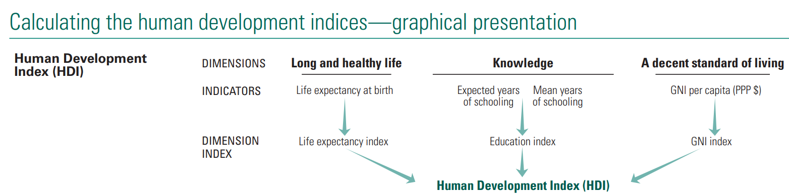
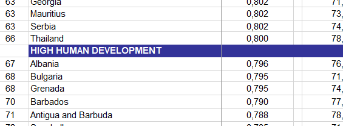

Nesta atividade vamos analisar o Índice de Desenvolvimento Humano (IDH), uma medida de bem-estar que inclui aspectos não materiais, e fazer comparações com o PIB per capita (uma medida de bem-estar material). O PIB per capita é um índice simples calculado como a soma de seus elementos, enquanto o IDH é mais complexo. Em vez de utilizar diferentes tipos de despesas ou produção para medir o bem-estar ou os padrões de vida, o IDH é composto por três dimensões associadas ao bem-estar:
Saúde: uma vida longa e saudável
Educação: conhecimento
Renda: Padrão de vida adequado.
1. Download e Importação dos Dados
Os dados do IDH que analisaremos são do Relatório de Desenvolvimento Humano de 2016 do Programa das Nações Unidas para o Desenvolvimento (PNUD). Para responder às perguntas abaixo, faça o download dos dados e das notas técnicas do relatório (elas estão em inglês, mas não se preocupe).
Clique em Table 1: Human Development Index and its components para baixar uma tabela em formado Excel (.xlsx).
Salve o arquivo dentro da pasta dados do seu projeto (criado na atividade anterior). Dê um nome mais intuitivo para ele como dados_idh.xlsx.
As notas técnicas fornecem uma apresentação diagramática de como o IDH é construído a partir dos quatro indicadores.

Diagrama de construção do IDH
Abra seu projeto no RStudio e crie um novo script no RStudio com o nome atividade2.R.
Carregue os pacotes library(tidyverse) e library(readxl). Caso eles não estejam instalados, instale-os com o comando install.package("tidyverse") e install.package("readxl").
Importe os dados com a função read_excel(), chamando o objeto de df_idh. Lembre que usando o argumento skip=7 podemos ignorar as primeiras 7 linhas.
Visualize as primeiras linhas do banco de dados com a função head().
# A tibble: 6 × 15
...1 VERY HIGH HUMAN DEVELO…¹ ...3 ...4 ...5 ...6 ...7 ...8 ...9 ...10
<dbl> <chr> <chr> <lgl> <dbl> <chr> <chr> <chr> <chr> <chr>
1 1 Switzerland 0.96… NA 84.0 <NA> 16.5… <NA> 13.8… <NA>
2 2 Norway 0.96… NA 83.2 <NA> 18.1… c 13.0… <NA>
3 3 Iceland 0.95… NA 82.7 <NA> 19.1… c 13.7… <NA>
4 4 Hong Kong, China (SAR) 0.95… NA 85.5 d 17.2… <NA> 12.2… <NA>
5 5 Australia 0.95… NA 84.5 <NA> 21.0… c 12.7… <NA>
6 6 Denmark 0.94… NA 81.4 <NA> 18.7… c 12.9… <NA>
# ℹ abbreviated name: ¹`VERY HIGH HUMAN DEVELOPMENT`
# ℹ 5 more variables: ...11 <chr>, ...12 <chr>, ...13 <chr>, ...14 <lgl>,
# ...15 <chr>
2. Tidy: arrumando os dados
É possível perceber que os dados possuem alguns problemas para resolvermos: (1) nomes de colunas incorretas; (2) colunas sem informação; (3) colunas numéricas no formato chr. Vamos consertar todos estes problemas.
SELECT: Vamos remover as colunas que não possuem valores. Como os nomes de colunas não estão legíveis, podemos usar a posição das colunas para seleciona-las. Selecione as colunas nas posições 1, 2, 3, 5, 7, 9, 11, 13 e 15 usando a função select().
FILTER: Algumas linhas da planilha excel possuiam uma indicação para países a classificação dos países, como vemos na imagem abaixo. Essas linhas não nos interessam e vamos elimina-la. Perceba que estas linhas não possuem valores de rank (Thailand é rank 66 e Albania rank 67). Assim, podemos filtrar toda linha que não tenha valores na coluna rank_idh_2021. Faça isto utilizando a função filter(). Dica: utilize a função is.na().

Mostrar código
df_idh <- df_idh |>filter(!is.na(rank_idh_2021))
MUTATE: Por fim, vamos converter o tipo de coluna das variáveis numéricas (rank_idh_2021, idh, etc). Algumas delas estão como texto (chr). Use a função mutate() para converter as colunas para valor numérico utilizando a função as.numeric().